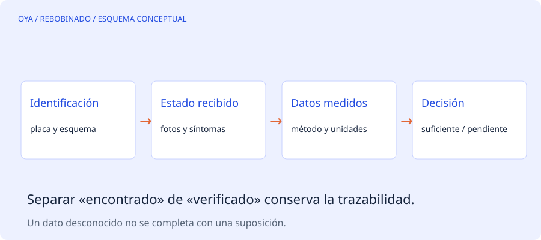

La información se pierde antes que el cobre
Al retirar un devanado pueden desaparecer detalles que luego no se recuperan de la placa: agrupación, pasos, conexiones internas, hilos en mano y dimensiones de cabezas. Una ficha de recepción convierte esas observaciones en datos trazables y separa lo confirmado de lo supuesto.
No hace falta describir una experiencia propia para usar una ficha rigurosa. Hace falta registrar quién observa, con qué instrumento, en qué condiciones y qué grado de certeza tiene cada dato. Un campo vacío con motivo documentado es preferible a una cifra inventada.
Identificar la máquina y su servicio
Registra fabricante, modelo, número de serie, potencia, tensiones con sus símbolos de conexión, frecuencia, corriente, velocidad, servicio, protección y refrigeración. Adjunta una fotografía legible de la placa, no solo una transcripción. Las dos permiten detectar errores de lectura posteriores.
Pregunta por la aplicación, forma de arranque, variador, horas de servicio, frecuencia de maniobra y síntoma observado. «No gira», «dispara la protección» y «se calienta» no describen la misma condición. Anota también si hubo cambios recientes en alimentación, carga o ventilación.
Documentar el estado recibido
Antes de atribuir la causa a un devanado, registra conexiones y puentes, estado mecánico visible, contaminación y señales térmicas. Las fotos deben mostrar su contexto: una imagen de un conductor quemado sin ubicación puede resultar poco útil.
La posición recibida de un puente no demuestra que sea la correcta. Del mismo modo, un bobinado instalado anteriormente puede no corresponder al diseño original. Distingue «encontrado» de «verificado con documentación».
Datos del devanado que conviene preservar
| Dato | Aclaración necesaria |
|---|---|
| Ranuras y polos | No deducir solo por apariencia |
| Espiras por bobina | Indicar grupo y tamaño |
| Hilos y diámetro | Cobre desnudo y sistema de calibre |
| Paso | Expresar convención de conteo |
| Ramas y conexión | Dibujar el circuito identificado |
| Cabezas y longitud media | Registrar varios tamaños si existen |
La extracción de muestras y el desmontaje requieren un procedimiento profesional que evite daños al núcleo. Esta lista no describe una técnica de retirada ni recomienda temperaturas de horno.
Convertir medidas en decisiones
Guarda los resultados de ensayos junto con temperatura, instrumento, puntos de conexión y estado del motor. Una resistencia sin temperatura o una corriente sin tensión y carga tienen poca fuerza para comparar antes y después.
La ficha debe terminar con una decisión: continuar con datos suficientes, solicitar información o detener para identificación adicional. Si se propone cambiar tensión, frecuencia o aislamiento, la modificación debe quedar separada de una reparación destinada a conservar el diseño.
Cerrar la trazabilidad
Tras el trabajo, conserva el registro final de materiales, conexiones autorizadas, pruebas y condiciones de entrega. La utilidad de la ficha aparece en la siguiente intervención: permite comparar hechos en vez de reconstruir recuerdos. Las hojas imprimibles o exportadas pueden guardarse localmente sin enviar números de serie a una herramienta en línea.
Fuentes y alcance
Referencia de consulta: EASA/AEMT: guía de buenas prácticas de reparación. Los ejemplos numéricos son educativos y no describen un trabajo realizado.